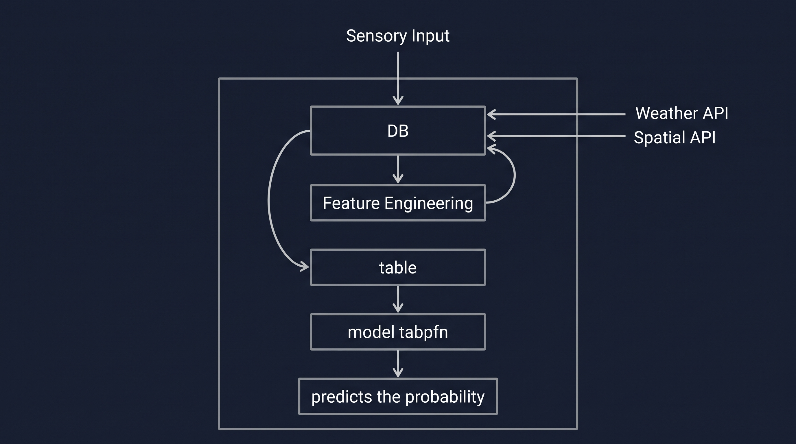

A Closed-Loop Cyber-Physical Ecosystem Integrating ESP32 Edge Telemetry, Satellite Weather, and TabPFN Zero-Shot AI.
Why traditional and naive automated irrigation fails to protect our most vital resources.
Agriculture consumes 70% of global freshwater withdrawals. Up to 40% of this water is wasted through over-irrigation, runoff, and uncalibrated timing.
Traditional automatic systems use fixed clock timers (e.g. running at 6:00 AM daily), ignoring actual microclimate dynamics.
Basic moisture sensors alone cause frequent pump hunting and inaccurate watering because they lack agronomic root-depth physics.
An intelligent cyber-physical system fusing physics, real-time sensing, and foundation AI.
ESP32 telemetry capturing multi-depth Soil VWC %, Soil Temp, Canopy Temp, RH, and Battery voltage.
Automatic daily enrichment via NASA POWER (solar radiation, wind, temp) & ISRIC SoilGrids (sand/clay % profile).
Zero-shot tabular transformer pre-trained on causal synthetic priors for instant, reliable probability prediction.
React Native Expo dashboard featuring QR sensor pairing, live telemetry gauges, and system status alerts.
Asynchronous multi-source ingestion, automated feature engineering, and foundation AI prediction.

How field telemetry and external intelligence flow through the backend system:
Zero-shot prior-data fitted transformer delivering robust inference without farm retraining delays.
Traditional models (XGBoost, SVM, Deep MLP) fail on newly deployed farms due to the "Cold Start" problem (lack of historical labeled training samples).
Instantaneous inference execution in Python:
Farmers gain intelligent, data-driven irrigation guidance on day one of planting, eliminating the traditional requirement for months of trial-and-error sensor logging.
React Native / Expo mobile app delivering instantaneous telemetry, QR pairing, and system control.
Demonstrated capability comparison against traditional open-loop timers and crude thresholds.
| Capability | Fixed Timer | Simple Threshold | Our System |
|---|---|---|---|
| Weather Integration | ❌ None | ❌ None | ✅ NASA POWER API |
| Soil Profile Physics | ❌ None | ⚠️ Manual Guess | ✅ ISRIC SoilGrids |
| Crop Growth Awareness | ❌ Static | ❌ Static | ✅ Dynamic Growth Stage |
| Decision Intelligence | ⚠️ Blind Schedule | ❌ Erratic Hunting | ✅ TabPFN Foundation AI |
| Rainfall Prevention | ❌ Waters in Rain | ⚠️ Delayed Reaction | ✅ Satellite Auto-Hold |
| Operational Paradigm | Blind Open-Loop | Uncalibrated Hunt | Closed-Loop Adaptive |
Key architectural strengths verified through deployment:
Advancing towards automated sprinkler actuation, multi-sensor grids, farmer-centric ICE hardware, and manual triggers.
Upgrading from advisory dispatch to an automated cyber-physical sprinkler network:
Broadening environmental observability across every micro-climate zone of the farm:
Re-engineering the In-field Core Edge (ICE) hardware to suit farmers' practical field realities:
Providing complete operational sovereignty to the farmer alongside autonomous AI decisions:
Autonomous Crop Stewardship: Fusing Edge IoT, Geospatial Intelligence, and Foundation AI for Sustainable Yields.